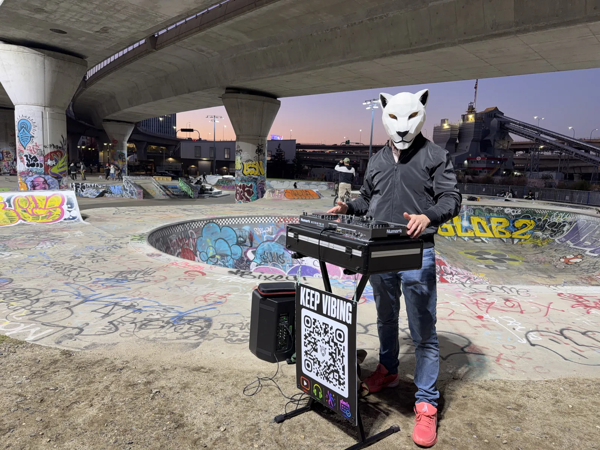

Your place.
My set.
A space with a little character? Let's talk about recording a DJ set there.
Book a free call
A little about the idea.
The music, your setting, a session on camera. Share the location and what you have in mind—no date needed to start.
We’ll discuss the setup, timing and filming details before anything is agreed.